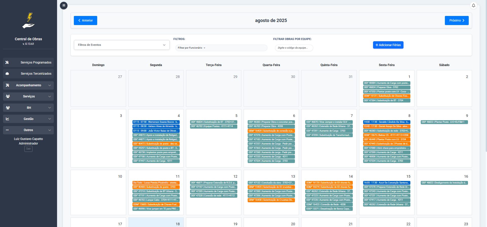
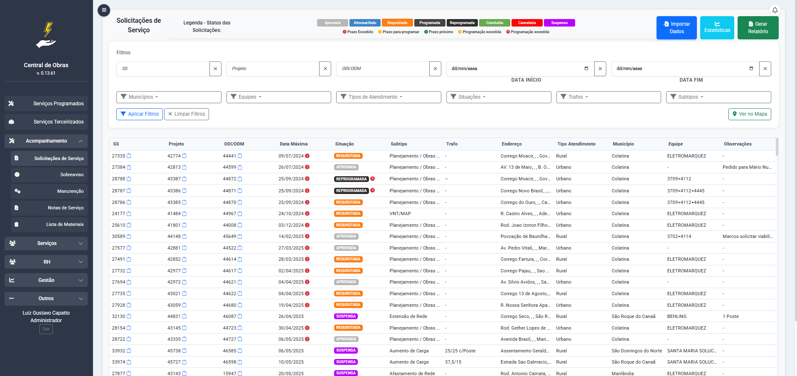
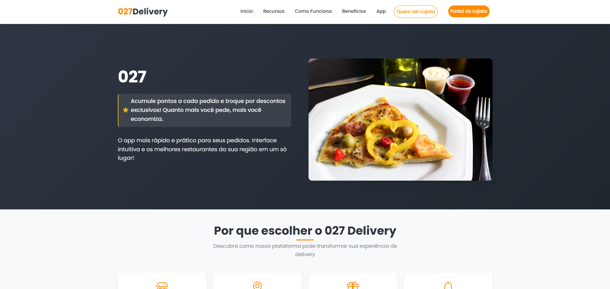
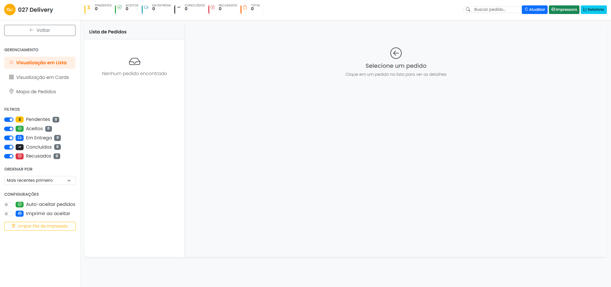

Desenvolvi um sistema completo para gerenciar obras internas na empresa onde trabalho atualmente, permitindo controlar etapas, prazos e recursos de forma organizada e eficiente.
 Atualmente, este é o projeto em que mais trabalho, colocando em prática todo o conhecimento adquirido em programação e desenvolvimento web. Além disso, continuo aprendendo novas técnicas e aprimorando minhas habilidades a cada atualização do sistema.
 